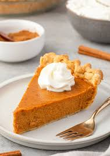
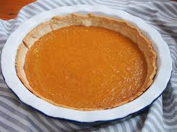

Pumpkin Pie

from sally's baking addiction
Jump to Recipe
Background
My family loves this recipe around the holidays, especially thanksgiving. This pumpkin pie is incredibly delicious. It is the perfect fall treat for the holidays. The spices in it make it delicious. It is a very nostalgic pie for many of the members of my family from when they were young. They love this pie to end a meal where we are all gathered. It is very easy to make and does not take too much time. They say This is the best pumpkin pie I have ever tasted
.
Tips and tricks to make this recipe good
- The center may be slightly jiggly when you take it out be it will solidify as it cools
- Make sure not to overcook it or else the filling will crack
- The cornstarch thickens the filling and ensures that it sets correctly
- You can use leftover Heavy Cream that you have to make the whipped cream which is a great topping
- The black pepper may sound odd but it will make this the best pumpkin pie you have ever had
Recipe

Serves:7-8 Prep time:1.5 hours Cook time:45-60 minutes
Ingredients
| Pumpkin filling and Crust |
| Ingredient |
Amount |
| Pie crust |
9 inch rolled out |
| Pumpkin Puree |
one 15 ounce can |
| eggs |
3 |
| Brown Sugar |
1 and 1/4 cup |
| Cornstarch |
1 tablespoon |
| Salt |
1/2 teaspoon |
| Cinnamon |
1 and 1/2 teaspoons |
| Ground Ginger |
1/4 teaspoon |
| Ground Nutmeg |
1/4 teaspoon |
| Ground Cloves |
1/8 teaspoon |
| Ground Black Pepper |
1/8 teaspoon |
| Heavy Cream |
1 cup |
| Milk |
1/4 cup |
Directions
- First bake your crust with pie weights for 10 minutes. Then poke the bottom of the crust with a fork. Next put it back into the oven for 7-8 minutes. Once it starts to brown take it out. .
- While the crust is baking you can start to make the filling by combining the pumpkin, 3 eggs, and brown sugar together. Then add the cornstarch, cinnamon, salt, ginger nutmeg, cloves, pepper, heavy cream and milk vigorously until combined.
- Next, pour everything into the warm crust, fill it up ¾ of the way. Bake the pie in the oven at 375 fahrenheit for 50 minutes, then check it and bake for another 5 minutes, check it one more time and remove it if the center is slightly jiggly but the edges are firm.
- Let the pie cool for at least 4 hours, overnight is better. This will help everything solidify and make it easier to cut. This also helps everything stay together!